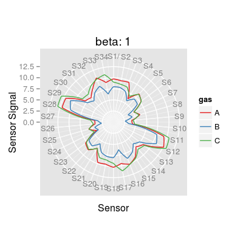
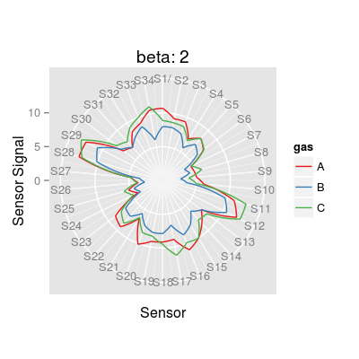
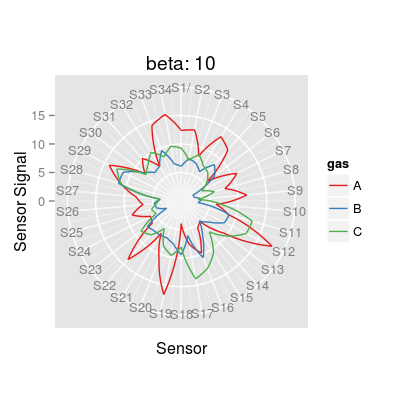
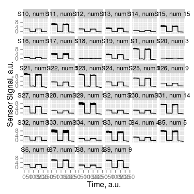

Demo NeuromorphicSim.
Description
This demonstration shows an example of neuromorphic
simulations possible with package
chemosensors. Particularly, we perform a
mixture quantification scenario, where the system is
trained on pure analytes and validation is thought to
quantify concentration of components in mixtures.
Details
The user should be aware of the following issues when implementing such simulations.
- A
concentration matrix (of three analytes maximum) can be
coded in several ways, manually by function
matrixor by using methods of classScenario. See the example code on class help pageScenariofor more details. - To configure a sensor array,
there are a list of parameters for initialization method
of class
SensorArray: the number of sensors (nsensors), sensor types (num), sensor non-linearity (alpha), sensor diversity (beta), noise levels (csd,ssdanddsd), and sensor dynamics (enableDyn). - To parallelize the computation in data generation
process, one can specify the parameter
nclusters(default value is1) of methodpredict. Another alternative is to set a global optioncoresby commandoptions(cores = 2).
Examples
# options(cores = 2) # use this option to confiure the parallel computation (in this case 2 CPU cores are specified) ### step 1/7: take a look at the reference array of 17 UNIMAN sensors sa.uniman <- SensorArray(nsensors = 17) # polar plot plot(sa.uniman, 'polar', main = "17 UNIMAN sensors")
### step 2/7: select sensor non-linearity (parameter alpha) for a sensor # - (here) sensor `num` is 3, tesed values of `alpha` are 0.01, 1 and 2.25 # - (note) in the current implementation, parameter `alpha` is the same # for all sensors in a array s <- Sensor(num = 3, alpha = 0.01) plotMixture(s, gases = c(1, 3), main = paste("alpha:", alpha(s)))
s <- Sensor(num = 3, alpha = 2.25) plotMixture(s, gases = c(1, 3), main = paste("alpha:", alpha(s)))### step 3/7: select sensor diversity (parameter beta) for a sensor array # - (here) the number of sensors `nsensors` is 34 (two times more than 17 UNIMAN sensors) # tesed values of `beta` are 1, 2, 5 and 10 sa <- SensorArray(nsensors = 34, beta = 1) plot(sa, 'polar', main = paste("beta:", beta(sa)))


### step 4/7: define the parameters of the array # - (here we use the default parameters) # `alpha` is 2.25 (default), `beta` is 2, # noise parameters `csd`, `ssd` and `dsd` are all 0.1, sa <- SensorArray(nsensors = 34) # polar plot plot(sa, 'polar', main = "Virtual sensors")
### step 5: define a concentration matrix (via class Scenario) # - (here) let's assume a scenario of mixture quantification for gases 1 and 3 # `tunit` is set to 60 (recommended value) training.set <- c("A 0.01", "A 0.05", "C 0.1", "C 1") validation.set <- c("A 0.01, C 0.1", "A 0.0025, C 0.5", "A 0.05, C 1") sc <- Scenario(tunit = 60, T = training.set, nT = 2, V = validation.set, nV = 2) plot(sc)
A B C 1 0.01 0 0 2 0.01 0 0 3 0.01 0 0 4 0.01 0 0 5 0.01 0 0 6 0.01 0 0### step 6/7: generate sensor data in reaction to `conc` conc0 <- conc[1:240, ] # to save CPU time of demonstration, # we use just two cycles of 2x60 time length each # 1 cycle = gas exposure phase and cleaning phase sdata <- predict(sa, conc0, nclusters = 2)Warning message: duplicated levels will not be allowed in factors anymore Warning message: duplicated levels will not be allowed in factors anymore Warning message: duplicated levels will not be allowed in factors anymore* Started computing in parallel on 2 CPU cores (if available) (SensorModel::sdataModel).qplot(X1, value, data = melt(sdata), geom = "line") + facet_wrap(~ X2) + xlab("Time, a.u.") + ylab("Sensor Signal, a.u.")
### step 7/7: some additional plots for testing # plot just few sensors qplot(X1, value, data = melt(sdata[, 1:2]), geom = "line") + facet_wrap(~ X2) + xlab("Time, a.u.") + ylab("Sensor Signal, a.u.") + opts(title = "First two sensors")# re-generate sensor data as noise-free sa0 <- sa csd(sa0) <- 0 ssd(sa0) <- 0 dsd(sa0) <- 0 sa0Sensor Array of 34 sensors, 3 gases A, B, C - enableSorption TRUE, enableDyn FALSE - Sensor Model (num 1, 2, 3 ... 17), beta 2, data model 'ispline' - Sorption Model (knum 1, 2, 3 ... 17), alpha 2.25 - Concentration Noise Model (csd 0), noise type 'logconc' - Sensor Noise Model (ssd 0), noise type 'randomWalk' - Drift Noise Model (dsd 0), common model 'cpc'* Started computing in parallel on 2 CPU cores (if available) (SensorModel::sdataModel).